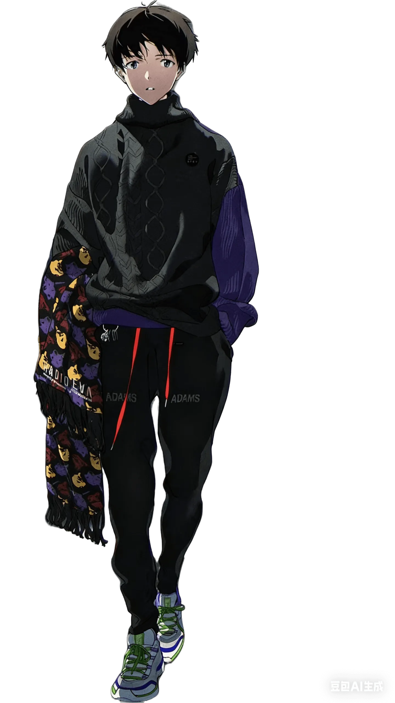

ARCHIVE_67
日常の写真
テーマ：コスプレ これが多分『Identity V（第五人格）』の少女。 写真を...
2026-07-27

テーマ：コスプレ これが多分『Identity V（第五人格）』の少女。 写真を...
布鲁可的驾驶舱版明日香，220左右 站在驾驶舱上的姿势，拍的最好的一张 还有用A...
维护 自打上次搞定向量数据库，零零散散的修了几个 bug 之后博客就进入稳定维护...
部署了本地服务器之后，在我们的新服务器上配置了向量数据库，现在英梨梨可以访问我们...
Welcome to WordPress. This is your first...
中国国产动画扶持政策失败史：2006-2012年的数据与反思 | 政策研究报告 ...
Initializing Otaku DNA sequence...
Magi System Architect
你好，我是 Wh1te。 一名扭曲病娇姐系爱好者。
这里是我的墓碑，记录着从 AI 代码开发 到 Web 前端构建 的全过程。
关注 露早GOGO 谢谢喵，
关注 柚恩不加糖 谢谢喵。
最近沉迷《白色相簿2》，不喜欢冬马和纱的有难了。
「いつか、東京の初雪をこの目で見たい」
"美しいものを見て、醜いものを作る。それが私の仕事だ。"
「美」在此处不仅是修辞，而是逻辑的终极形态。
正如《金阁寺》中火焰将实体从时间的腐朽中解放，代码亦是将思想从肉体中通过逻辑门进行上传的仪式。
SYNCHRONIZING DATA...
身份同步协议已启动 | 認証開始